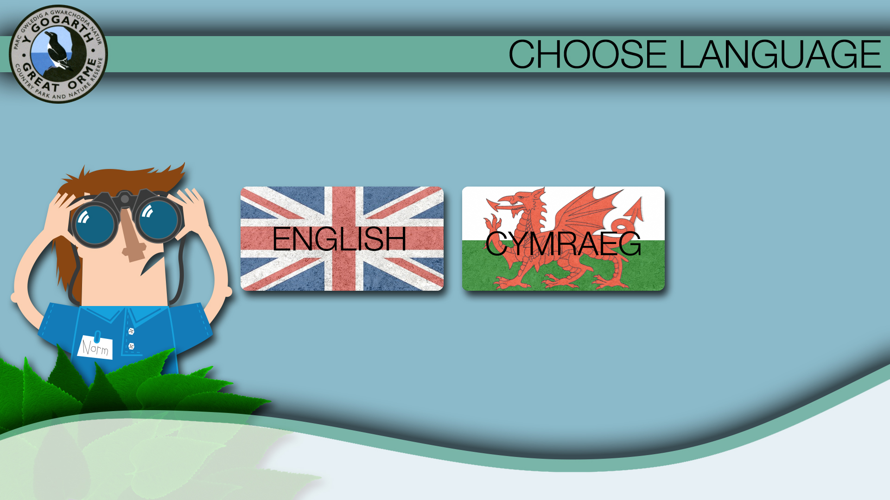
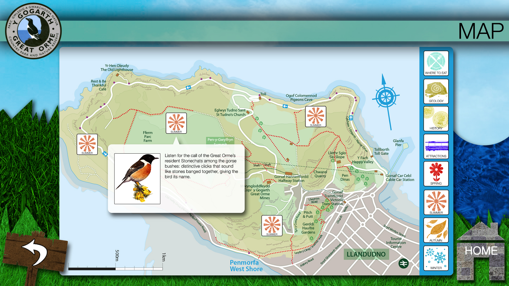
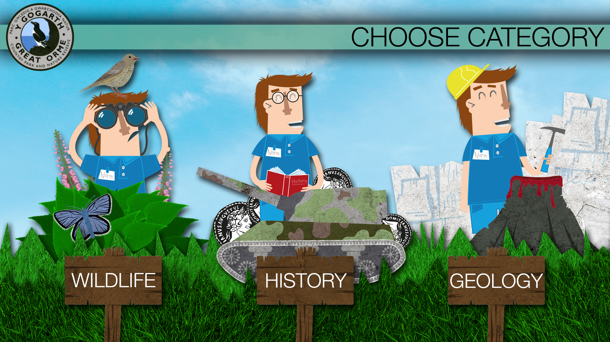
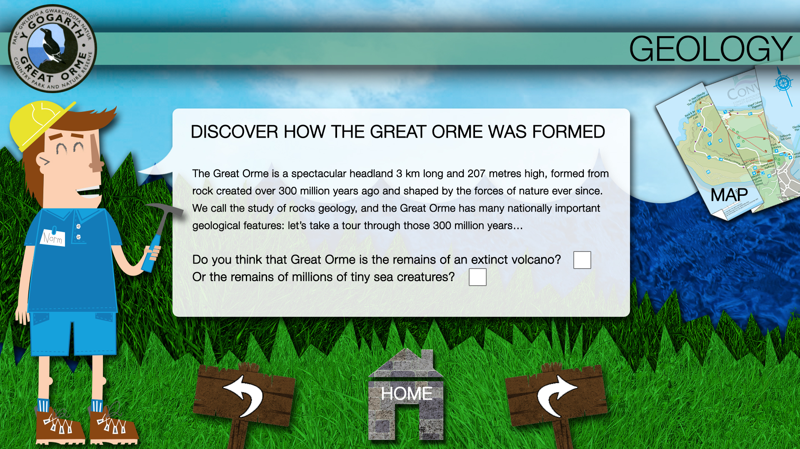

Interactive map
Map-led route with seasonal, category and point-of-interest hotspots.
- Wildlife
- Geology
- History
- Attractions
- Places to Eat

Main Menu
Over half a million visitors come here each year to admire the beautiful scenery and catch a glimpse of the rare species of wildlife, both animals and plants, which can only be found here.
Use the maps to EXPLORE the Great Orme's many attractions, or join our Country Park Warden to DISCOVER some of the Great Orme's secrets.
Map-led route with seasonal, category and point-of-interest hotspots.
Warden-led content flow with questions, answers and deeper story pages.

Users can turn categories on and off, then jump into location-based stories from the map.
Explore categories
Wildlife
Geology
History
Attractions / Things to Do
Places to Eat

Category-driven entry point for Geology, History and Wildlife, with supporting attraction and food listings in the broader experience.
Final titles
Map
Choose Language
Choose Category
Geology
History
Wildlife
Things to Do
Attractions
Places to Eat

The Great Orme is a spectacular headland 3 km long and 207 metres high, formed from rock created over 300 million years ago and shaped by the forces of nature ever since.
We call the study of rocks geology, and the Great Orme has many nationally important geological features: let's take a tour through those 300 million years.
Q1: Do you think that the Great Orme is the remains of an extinct volcano, or the remains of millions of tiny sea creatures?